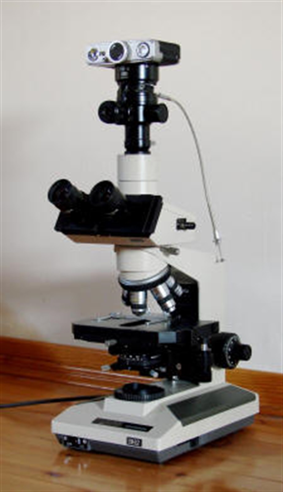

Hücre; canlıların temel yapısal ve işlevsel birimidir. Hücrenin keşfi mikroskobun icadı ile mümkün olmuştur. Biyolojinin en önemli gözlem ve ölçme araçlarından olan mikroskoplar, gözün görme sınırları ötesinde bulunan küçük cisimlerin optik veya manyetik bir seri mercek sistemi yardımıyla büyütülerek incelenmesini sağlar.
